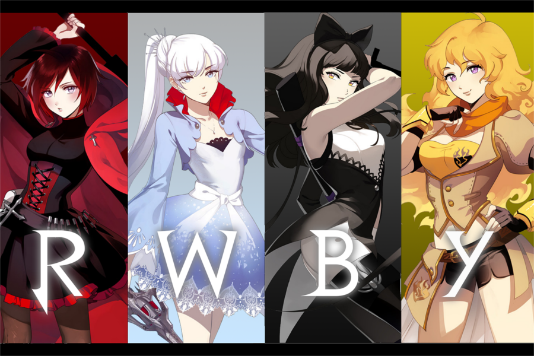
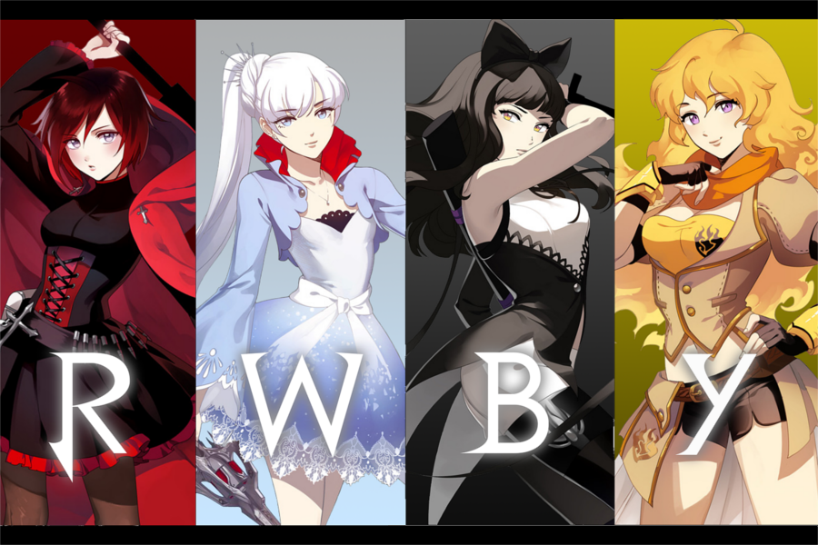

Who Am I?(But Better)

My name is Roy, I am a 15 year old Nobody and I am a big Kingdom Hearts fanboy. I am a highschooler in the 9th grade. My pronouns are "she/her".
My name is Roy, I am a 15 year old Nobody and I am a big Kingdom Hearts fanboy. I am a highschooler in the 9th grade. My pronouns are "she/her".
 >
>
>
>
I have a lot of interests but my main interests are Kingdom Hearts, The World Ends With You, RWBY, Ben 10, Beyblade, Yu-Gi-Oh, Final Fantasy, Jojo's Bizarre Adventure, Vocaloid, Project Diva, and Gundam!!!
My goals are to achieve my dreams and become the best Beyblader in the world. And also the best gamer girl in the world as well as a side quest.


My top 3 favorite games(from places 1-3) are Kingdom Hearts 2, Project Diva, and The World Ends With You. A couple of my favorite shows are RWBY, JJBA, Ben 10, and Bakuten Shoot Beyblade.
A few of my favorite song artists are Deco*27, Hikaru Utada, The Chainsmokers, iroha(sasaki), Ho-kago Tea Time, OneRepublic, Capital Cities, etc.!
Some of my favorite songs are Face My Fears (by Hikaru Utada), Simple and Clean (by Hikaru Utada), This Will Be the Day (by Jeff Williams), Paris (by The Chainsmokers), Counting Stars (by OneRepublic), Safe And Sound (by Capital Cities), and Meltdown (by iroha(sasaki)).

Trivia about me below!
DO NOT TOUCH THAT BUTTON BELOW